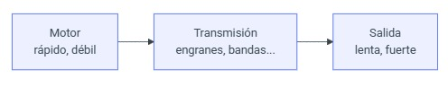
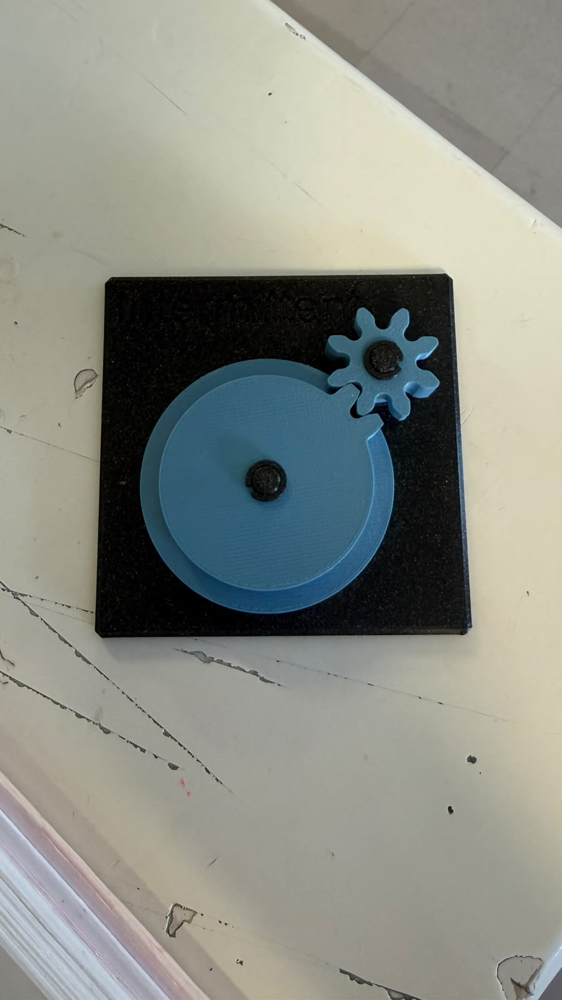
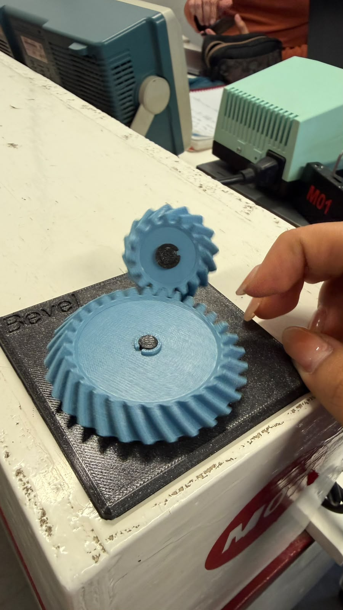
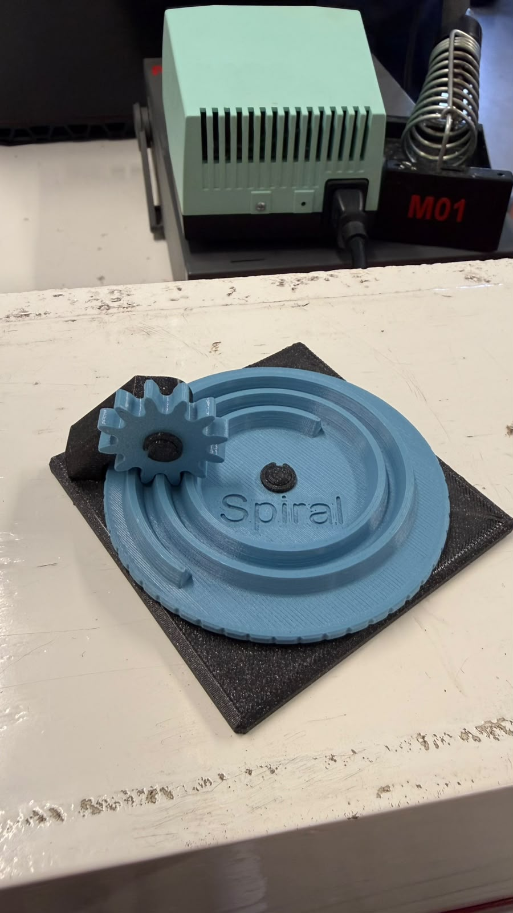
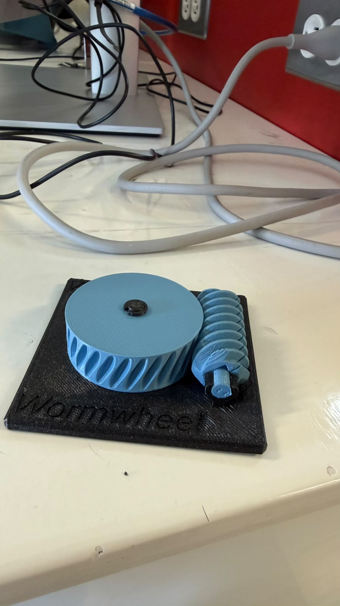
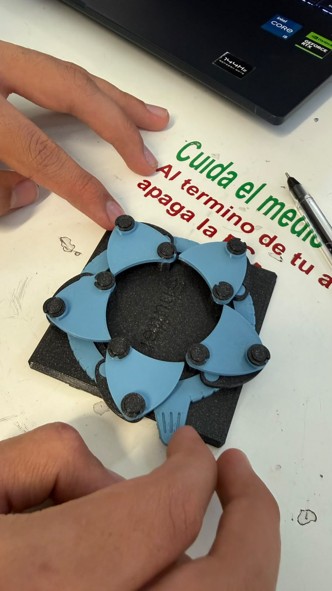
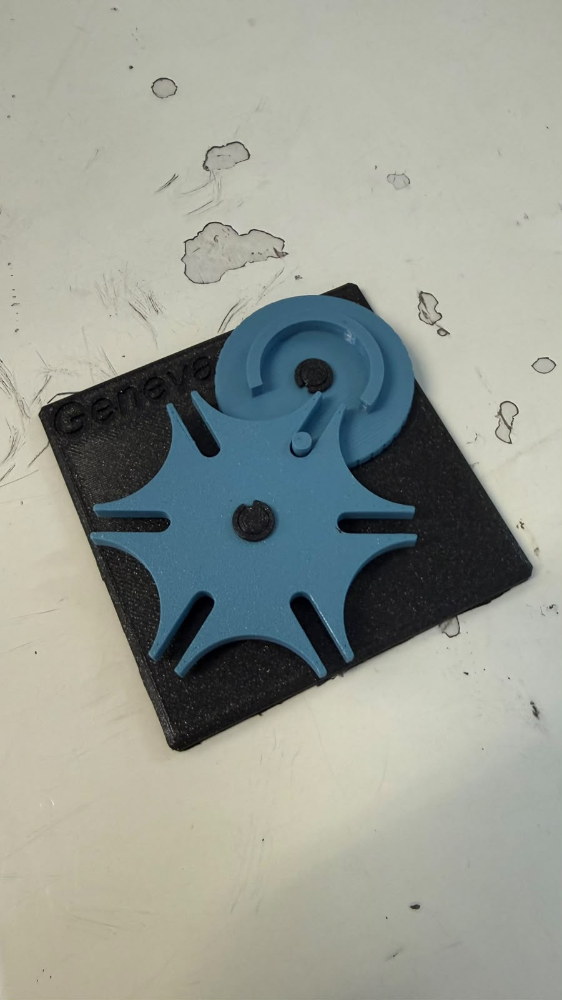
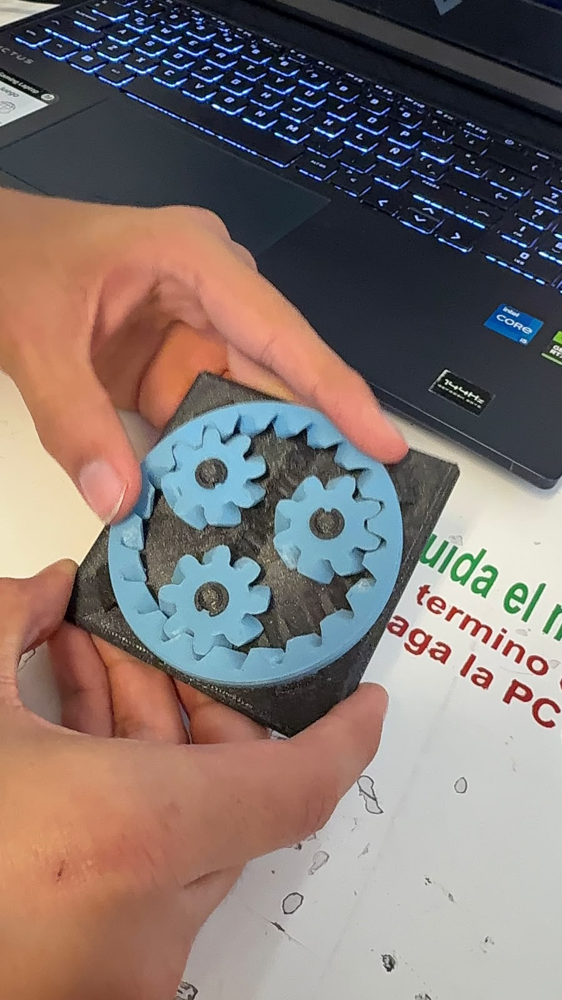
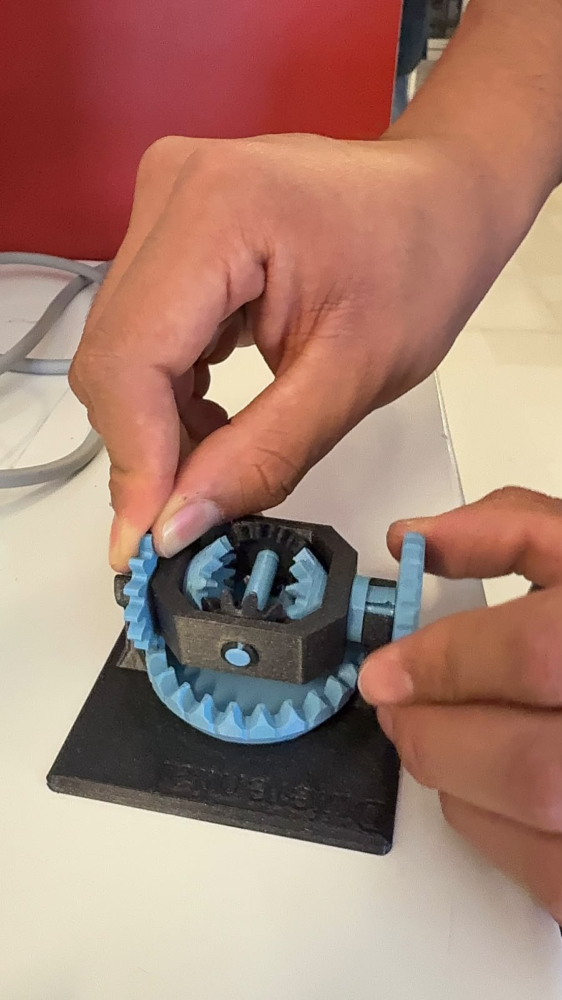
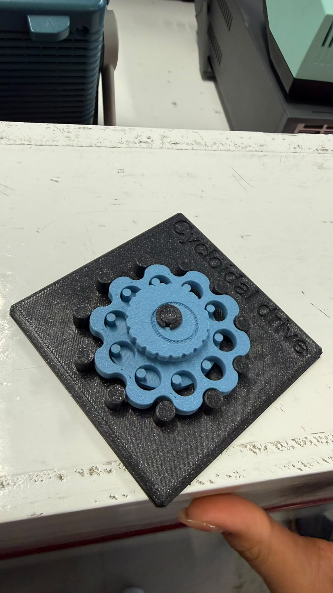

Sesión 4 — Mecanismos
Qué debía lograr hoy
- [✅] Entender cómo los mecanismos transforman el movimiento
- [✅] Calcular relaciones de transmisión simples
Qué usé
- Planetary en 3D
- Bevel en 3D
- Spiral en 3D
- Cycloidal drive en 3D
- Worm/Worm drive en 3D
- Pulley en 3D
- Intermittent en 3D
- Geneva en 3D
- Universal joint en 3D
- Shutter en 3D
- Differential en 3D

Un motor que gira rápido pero con poca fuerza puede entregar una salida lenta y potente si se usan engranes o bandas.
Qué hice y qué pasó (evidencia)
Intermittent Mechanism

Bevel Gear

Universal Joint

Spiral

Worm Gear

Shutter

Geneva Mechanism

Star Wheel Mechanism

Differential

Cycloidal Gear

Relación de transmisión
Si dos engranes están acoplados, con Z1 dientes en el de entrada (motriz) y Z2 dientes en el de salida (conducido), la relación de transmisión (i) es:
i = Z2 / Z1 = w_entrada / w_salida = tau_salida / tau_entrada
Interpretación
| Caso | Tipo | Qué pasa en la salida |
|---|---|---|
| i > 1 | Reductor | Gira más lento y entrega más par (fuerza) |
| i < 1 | Multiplicador | Gira más rápido y entrega menos par |
- La velocidad angular (w) y el par (tau) cambian en sentido contrario:
- w2 = w1 / i
- tau2 = tau1 * i (sin contar las pérdidas por fricción)
- Un engrane no fabrica energía: solo la transforma. Lo que se gana en fuerza se pierde en velocidad, o al revés, dependiendo del número de dientes de cada engrane.
Trenes de engranes compuestos
Si hay varias etapas en serie, la relación total es el producto de las relaciones de cada etapa. Ejemplo: una etapa de 1:4 seguida de otra de 1:16 da 4 × 16 = 64. Por eso una caja reductora tipo motor TT alcanza 1:48 ocupando muy poco espacio.
Ejemplo resuelto
Un piñón de 12 dientes mueve un engrane de 36 dientes:
i = 36 / 12 = 3
La salida gira a 1/3 de la velocidad de entrada, pero con 3 veces más par.
Ejercicio: calcular la relación de transmisión
Datos
| Caso | Motriz | Conducido | Dato conocido |
|---|---|---|---|
| A | Z₁ = 5 | Z₂ = 10 | ω₂ = 10 rpm, τ₁ = 1 N·cm |
| B | Z₃ = 5 | Z₄ = 20 | ω₃ = 20 rpm, τ₃ = 4 N·cm |
Qué se busca: ω₁ y τ₂ en el caso A; ω₄ y τ₄ en el caso B.
Caso A
i_A = Z₂ / Z₁ = 10 / 5 = 2
ω₁ = i_A · ω₂ = 2 · 10 = 20 rpm
τ₂ = i_A · τ₁ = 2 · 1 = 2 N·cm
Caso B
i_B = Z₄ / Z₃ = 20 / 5 = 4
ω₄ = ω₃ / i_B = 20 / 4 = 5 rpm
τ₄ = i_B · τ₃ = 4 · 4 = 16 N·cm
Resultados
| Caso | i | Velocidad | Par |
|---|---|---|---|
| A | 2 | Entrada ω₁ = 20 rpm, salida ω₂ = 10 rpm | τ₂ = 2 N·cm |
| B | 4 | Salida ω₄ = 5 rpm | τ₄ = 16 N·cm |
Conclusión: en los dos casos i > 1, o sea que el sistema baja la velocidad y sube el par en la misma proporción.
Tabla de estaciones
| Estación | ¿Qué transforma? | Relación i estimada | ¿Reversible o autobloqueante? | ¿Dónde lo has visto en la vida real? | ¿Dónde serviría en el carro o en un proyecto tuyo? |
|---|---|---|---|---|---|
| A - Diferencial | Reparte una entrada de giro en dos salidas que pueden ir a distinta velocidad con el mismo par | Corona-piñón de ≈ 3:1 a 4:1; satélites 1:1; entre salidas ~1:1 en recta y variable en curva | Reversible, NO autobloqueante | Eje trasero/delantero de un carro | Permite que las ruedas giren distinto en las curvas; ruedas independientes de un robot que da vuelta |
| B - Cicloidal | Velocidad ↔ par: gran reducción en poco espacio y con poco juego (backlash) | Alta, típico 30:1 a 100:1+ (se cuentan las vueltas de entrada por cada una de salida) | Reversible pero con mucha fricción interna; casi autobloqueante | Modelo de práctica (engrane azul con lóbulos internos); articulaciones de robots industriales | Articulaciones de robots, dirección asistida; reductor compacto para un brazo de precisión |
| C - Cardán | Cambio de eje: transmite el giro entre ejes con ángulo; la salida acelera y frena dos veces por vuelta | 1:1 en promedio, con fluctuación | Reversible, NO autobloqueante | Modelo de práctica (junta azul); flecha cardán del carro | Flecha entre la caja de velocidades y el diferencial; mover una rueda con ángulo variable |
| D - Obturador | De continuo a intermitente: una sola entrada mueve varias láminas sincronizadas (no usa dientes) | Depende del número de láminas | Reversible, NO autobloqueante | Modelo de práctica (obturador negro con aspas azules); diafragma de una cámara | Iris para regular el paso de aire o luz; apertura/cierre en un proyecto |
| E1a - Cónico recto (Bevel) | Cambio de eje a 90° con dientes rectos en forma de cono | i = Z₂/Z₁ (se cuentan los dientes de piñón y corona) | Reversible | Transmisiones de taladros manuales y mecanismos angulares | Cambiar la dirección del giro del motor hacia las ruedas |
| E1b - Cónico espiral (Spiral) | Cambio de eje a 90° con dientes curvos en espiral, de contacto más suave y silencioso que el recto | i = Z₂/Z₁ (se cuentan los dientes de piñón y corona) | Reversible | Diferenciales de camionetas y autos | Par cónico del diferencial trasero |
| E2a - Engrane intermitente (Intermittent) | De continuo a intermitente: la entrada gira sin parar y la salida avanza con pausas | Depende de los dientes y de las pausas por vuelta | NO autobloqueante | Mecanismos de avance por pasos (contadores, juguetes) | Hacer que una pieza avance por pasos |
| E2b - Ginebra (Geneva) | De continuo a intermitente: cada vuelta de entrada mueve la salida un paso fijo | 1 vuelta de entrada = 1/n de vuelta de salida, con n ranuras | Se traba durante la pausa | Proyectores de cine antiguos, relojes mecánicos | Indexar posiciones (selector o carrusel) |
| F - Planetario (Planetary) | Velocidad ↔ par: reducción compacta con ejes en el mismo centro | Depende de qué elemento se fije (sol, planetas o corona) | Reversible | Cajas automáticas, taladros y atornilladores eléctricos | Reducción compacta en un motorreductor |
| G - Tornillo sin fin (Worm) | Cambio de eje a 90° con una reducción muy grande en una sola etapa | i = Z_rueda / entradas del tornillo | Autobloqueante (la rueda no logra mover al tornillo) | Clavijas de guitarra, elevadores y portones | Cualquier mecanismo que no deba retroceder al apagar el motor |
| H - Polea (Pulley) | Velocidad ↔ par mediante una banda entre dos ejes separados | i = D₂/D₁ (diámetros de las poleas) | Reversible | Banda del motor en un auto, máquinas de coser | Llevar el giro del motor a un eje alejado |
Nota: la columna de vida real de E1a, E1b, E2a, E2b, F, G y H la llené con ejemplos comunes; confírmalos con tus modelos o con tu profe.
Qué falló y cómo lo resolví
- Síntoma: No me coincidía el resultado del ejemplo (piñón de 12 dientes moviendo un engrane de 36). Dudaba si i = Z1/Z2 o i = Z2/Z1 y no tenía claro qué significaba el número que salía. En el ejercicio de 5 y 10 dientes me daba i = 1/2, pero con la fórmula de la teoría salía i = 2.
- Cómo lo encontré: Comparé mi cálculo con el ejemplo resuelto (i = 36/12 = 3) y vi que las dos definiciones estaban al revés: en mi cuaderno usaba Z_motriz / Z_conducido y la teoría usa Z_conducido / Z_motriz. También noté que cuando el conducido tiene más dientes la salida gira más lento, así que la velocidad se divide entre i y el par se multiplica por i.
- Solución: Me quedé con una sola convención para toda la práctica: i = Z_conducido / Z_motriz, con Z2 (el